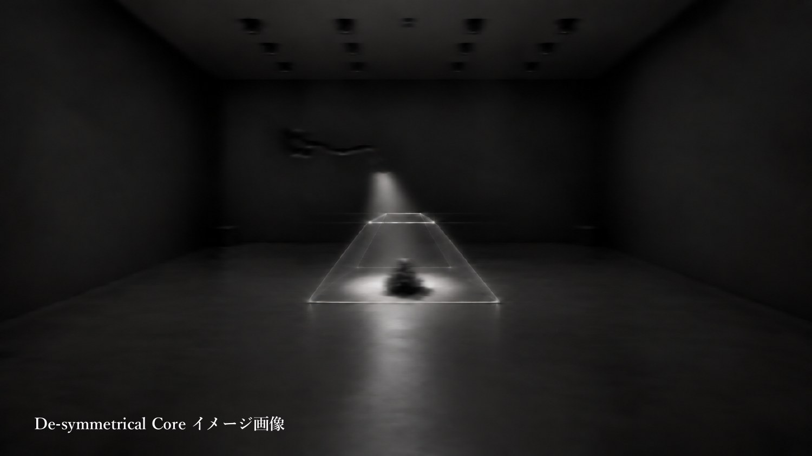
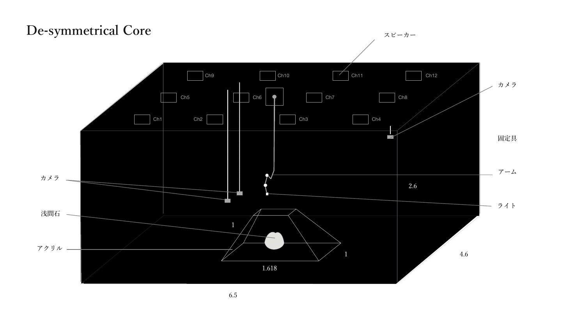
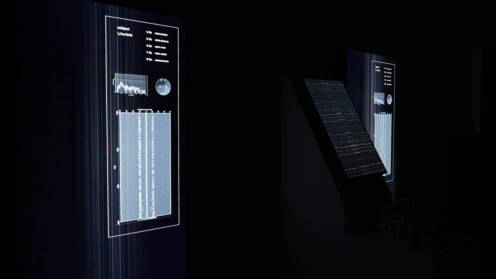
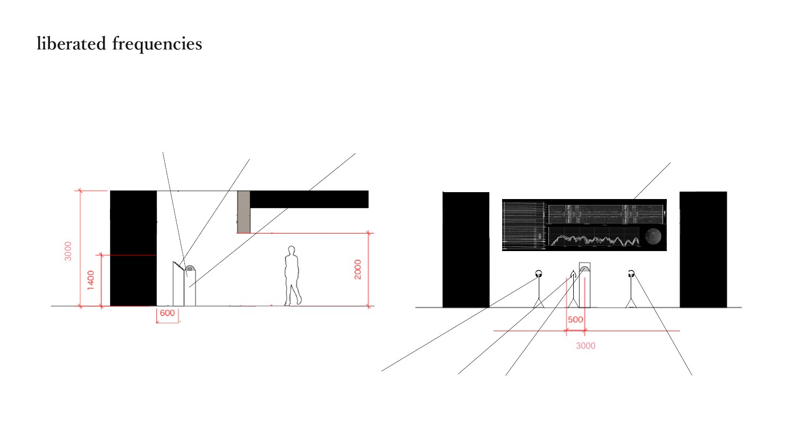

提供された「Dot_Area.pdf」全12ページのうち、展示イメージと構成図（5–8ページ）を基に制作した3Dビューです。2作品を個別の空間として表示しています。会場全体における相互の位置関係は資料にないため含めていません。




Coreの室内寸法、アクリル底辺、12chの配列、frequenciesの間口・高さ・什器寸法を反映。単位のないCore図面の数値はm、frequencies図面はmmとして読み取っています。
アクリルの高さ・上面・厚さ、石の凹凸、機材の外形と正確な座標、frequenciesの奥行きは推定です。照明・影・画面波形・アーム動作はブラウザ上での視覚表現で、実機の計測・制御・音響シミュレーションではありません。
PDF内の開催日程や運営案を、公開・確定の告知として転載するものではありません。機材リストはPDF内の図版を参照し、リンク先のライブシートは未照合です。